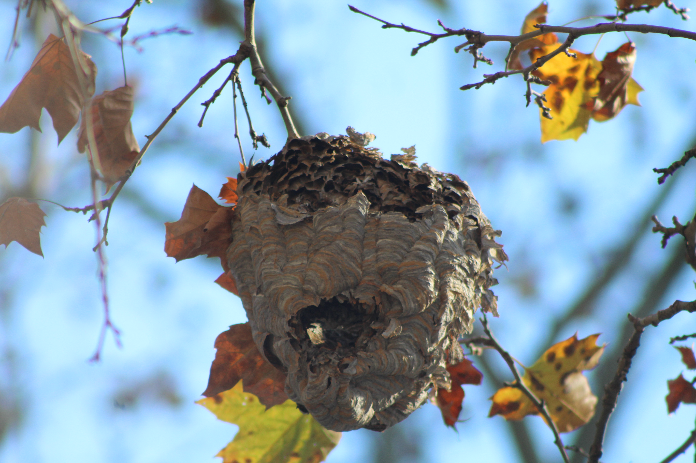
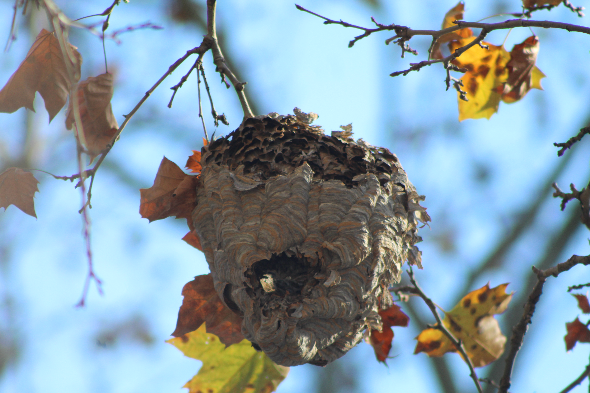

Origin
This project owes its existence simply to nature, my own curiosity, and opportunity.
While en route to a class trip in October of 2024, I spied a low-hanging wasp nest and photographed it. Later on, I
recalled the handful of them I happened upon in 2022 and 2023. Since I was gifted a superb camera and so often
travel with it, I decided to log any other wasp nests that I could find.
Over the months, I came to realize that this was great timing for such a survey. In these seasons, the wasps are
dormant or in hiding, and the nests are much easier to see with many trees bereft of foliage.
What are Wasps?
As you may know, wasps are winged insects within the Order Hymenoptera, a classification they
share with bees, ants, sawflies, and a few other relatives. However, wasps are NOT bees. They do seem to be
ancestors from which many bees developed, however.
Many know or revile wasps for their potent bites, venomous stings, or other natural armaments and defenses.
Said stingers are actually modified ovipositors (egg-laying structures,) so males lack them. But some male
wasps may have less-threatening defensive spines instead.
There are several subfamilies of wasps, with different social and nesting habits. While many of us know bees
for their great work as pollinators, wasps do as well, though to a lesser degree. Wasps lack the hairs and
pollen-collecting leg "baskets" of bees. However, some wasps who pollinate plants specialize, and give their
best aid to select plant species.
Some wasps hunt and capture other arthropods to feed to their offspring or set eggs within. In this way, they
can be formidable pest countermeasures for agriculturalists, if introduced carefully. This means of employing
other creatures to help minimize damage to crops is called
IPM.
Tools for the Task
Beyond the computer and software used to code this page, I needed my camera, binoculars, and any sort of
notepad. The camera (with zoom lens) and binoculars are both great for combing trees and buildings for nests.
A cell phone camera may be suitable, too, but you might need to zoom more powerfully than some phones can
while retaining a clear image.
To compile info for this map, I collected at least four images for each nest found:
- One broad view of the location to help a curious viewer find it, preferably with the nest in-view.
- One close-up of a nearby street sign or numbered building where possible.
- At least two close-ups of the nest from different angles.
Identifying Nests
Wasps are diligent builders, although not all chew and collect wood fibers to build the classic paper nests
that you'll find catalogued in my map below. Some instead make smaller cells of mud. Some species may nest
underground, within pipes, under the eaves of roofs, and in other places that may bring them close to humans.
During my first job in a video game store, even I once found wasp nest cells inside of a used Nintendo
cartridge (which still worked once cleaned!)
I don't disturb wasp nests, but this project has given me a welcome chance to observe them over a frame of
several months. Most that I've found have become well-worn, with no one actively repairing them, and a few
have fallen and been erased completely by weather. But so many of them endure despite the snow, wind, and
rain, and remain recognizeable. This gradual collapse has treated me to some interesting interior views.
Daylight is also an important resource, since other creatures' nests and leavings (including humans, of
course!) can look similar in the shade. I don't mark an insect on my map until I've affirmed that it is one.
- Withdrawing library books on all fields I needed to know more of to complete this project-- especially more refined use of html, css, and js.
- Being granted a replacement camera to begin taking photos again.
- Studying and exploring free Geographic Information Systems (GIS,) which can be used to create and integrate interactive maps into a site.
- Gaining inspiration to envisage and finish the artistic elements of this page.
The greatest challenge of this project by far has been learning to code an interactive map. I've found over six dozen nests, and have multiple
pictures of each, so I also needed to learn ways to make that load less taxing on a viewer's device. I considered using html map elements to
create one, but with hundreds of images to apply for the nests, that could be impractical.
A lesser yet tall impediment was the loss of my camera, which suffered terminal moisture damage when I took outside during light snow
early in December. That rendered me unable to take fine quality photos for a month.
I also want this project to feature original artwork of my own creation, which is difficult since I hardly consider any of my creative
works complete or worth sharing. I forayed into the use of Piskel, a free, browser-based pixel art application, to create the icons
for my map.
Similarly, I learned use of MuseScore4, to give myself of means applying music I created to this page. My original way of composing music is more
convenient, but doesn't let me share files as easily.
The survey and photography was simple and fun, but as anything, can be improved. For example, if I wanted to make this info more exhaustive,
I could give each nest a designation and update its info box with a new picture every time I see it. That would allow onlookers to see its
deterioration (or repair!) progressively.
I could also use my voice recorder to take such notes efficiently.
Research revealed that there are several ways to code an interactive map, though some are beyond my present ability. No matter, developer tools and general curiosity serve well. This list presents several interactive mapping services, some of which have free versions. Minerva's Owls, the website of an art collection I adore, has an interactive map with the features mine should strive for. Google Maps also offers interactive map APIs, which look to be tutorialized well.
Before I present the map, you may want to know what each of its markers mean.
They'll be given as intact, damaged, destroyed, or fallen.

|

|

|

|
Intact |
Damaged |
Destroyed |
Fallen |
|---|---|---|---|
| This nest is in fine condition. Surpsingly many have remained this way. | This nest may have some peeling or a torn walls, but remains whole overall. Interior cells may be exposed. | Nature has likely worn this nest to shambles. It still hangs, but as just a few exposed cells. Alternately, it may have belonged to a small group that had to abandon it prematurely. Some wasp species normally build small, open nests like this, so there's also a chance it was always this way. | This nest has fallen from its host branch or structure. It'll likely be erased after a few more days of weathering. You may no longer be able to find it. |

|
|
|
|
I live on the edge of East New York, and regularly transit several bordering areas throughout my common doings. I visited Fulton Park twice, and was excited to find several wasp homes there. If I continue or renew this project, I'll be sure to roam a few new areas that I can comfortably access. Between late October and the date I submitted this page, I found over 80 hymenopterid nests. The greatest counts of nests a single block (10 and 8, respectively) were on a large block with ample grass, and the block of a community farm I live near. The block of a community farm near me has the most I've yet seen on a single city block, 8. Unsurprisingly, they seem to be most concentrated around large parks and gardens. Even a simple action like perusing the opposite site of a street often reveals more hanging nests. There looks to be some variety in nest construction, likely the consequence of different species or available materials. The insects chew and form this paper themselves. Perhaps especially versed or knowledgeable observers could surmise which types or parts of plants they use by nest color. For every nest I found, there are undoubtedly many that I did not or cannot, and many possibly lost to conditions before my search.
Observations
- I've seen some striking blues, greens, and orange on some wasp homes.
 

- The greatest concentration of nests I've yet found is close to where I live, on the block of a community farm.
- I've yet to find any nests in evergreen trees--those which retain retain their leaves through winter.
- A few of these insect nests are very close to home windows, and I'll be sure to warn anyone who minds and may not realize. Perhaps an ecologist or botanist knows if these insects prefer to live on or build with certain plant species.
- Over my last few weeks of searching, a few nests may have been removed. My searches occasionally drew attention to the nest as passersby wondered what I was even looking at.
I've known subways and modern buildings to employ bird-deterrent spikes to try to discourage habitation. While I've seen various attempts at wasp discouragement, like artificial nests, I don't know how well any work. As the climate shifts, these insects may become increasingly close and widespread neighbors. Though some wasp varieties feast upon bees, others can be strong garden security. Indeed, my learnings in Intro to AgTech presented some wasps among the best integrated pest management (IPM) guests.
This project was a great delight, and gave me a new way to enjoy the outdoors during a season when some of my favorite activities aren't available.
It was a joy to exercise my observation, curiosity, and photo skills, and watching the nests endure or change over time was insightful. I'll be able to
document or organize any similar future endeavors better, too. I earned a variety of responses from onlookers, from puzzled gazes to curious inquiry.
A few of these nests are near homes or windows, so I'll have to warn the tenants about them. I'll report the results here once I do. Perhaps some local
ecologist will enjoy this information.
Having done this, I'm excited to try to incorporate Kindwise's insect identifier into this site next.
I'd like to learn if it can hypothesize wasp species by nests. I relayed a few messages with some
company staff, and learned that the identifier was trained with some images of wasps on nests. Still,
it isn't expected to be able to gauge species by such a sight alone.
I may also present this to any curious botanists or ecologists, who may be able to descry some correlation
between the types of plants in an area and its wasp population.
I'm likely to repeat this project next year, from a fresh count. Also, while I don't want to endanger
wasps, humans, or any other organisms, I will try to spread this information to anyone with a nest
on their home.